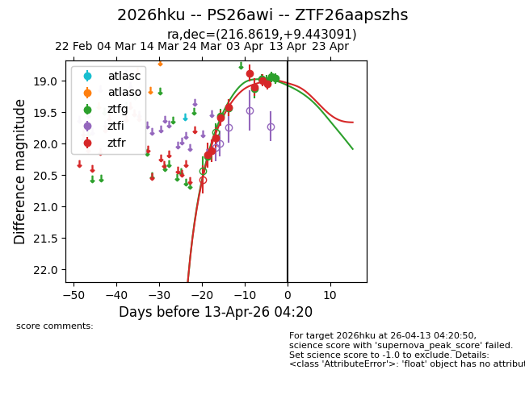
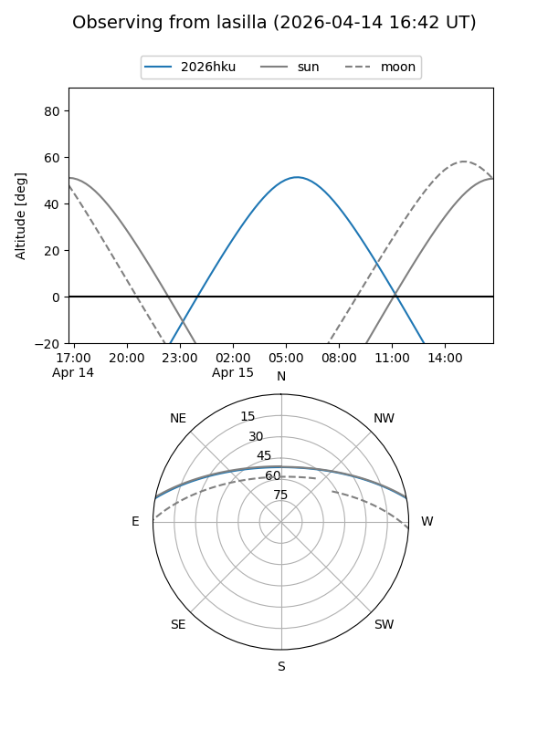
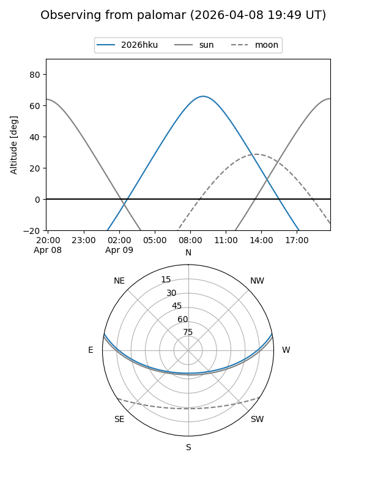
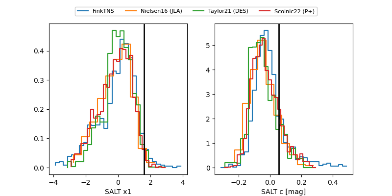

2026hku
Target 2026hku at 2026-04-13 04:32
Aliases and brokers:
FINK: link
Lasair: link
ALeRCE: link
TNS: link
YSE: link
alt names
ZTF26aapszhs (ztf,fink_ztf)
2026hku (tns,yse)
PS26awi (panstarrs)
Coordinates:
equatorial (ra, dec) = 216.8619,+9.44309
equatorial (HMS+DMS) = 14:27:26.85,+09:26:35.13
galactic (l, b) = (359.5014,+61.26162)
Flags:
Photometry:
last ztfg=18.96, ztfr=19.05
8 ztfg, 9 ztfr detections
Lightcurve

Visibility


Additional plots
